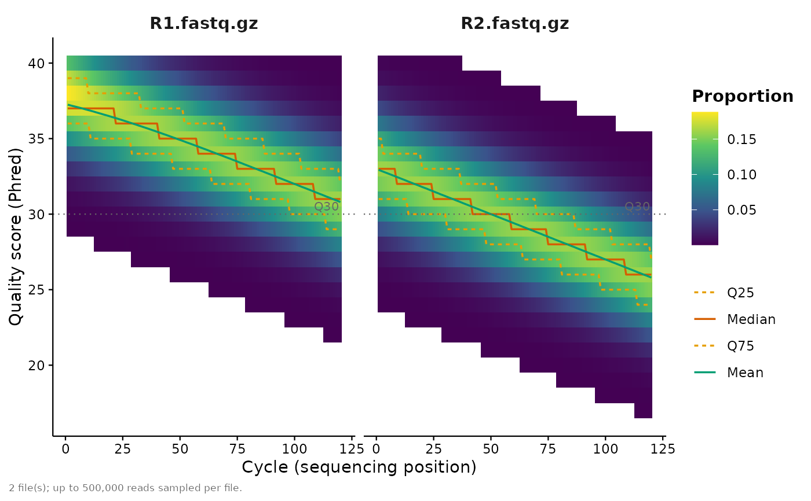

Draws the read-quality profile across sequencing cycles for one or more
FASTQ files – the diagnostic used to choose DADA2/QIIME 2 truncation
lengths. For each cycle (base position) it shows the distribution of Phred
quality scores as a frequency heatmap ("heatmap"), or the per-cycle mean
with an inter-quartile ribbon ("line"), overlaid with mean / quartile
summary lines. A horizontal reference line marks a target quality (Q30 by
default).
Usage
mp_qc_profile(
x,
aggregate = FALSE,
n = 5e+05,
sample.names = NULL,
plot.type = c("heatmap", "line"),
show = c("mean", "quartiles"),
quality.line = 30,
palette = NULL,
theme = NULL,
...,
plot.title = NULL,
plot.subtitle = NULL,
plot.caption = NULL,
font.size = getOption("micropubr.font.size", 11),
interactive = FALSE,
return.data = FALSE,
verbose = getOption("micropubr.verbose", FALSE)
)Arguments
- x
A character vector of FASTQ file paths (wildcards allowed), a single directory containing FASTQ files, or a per-cycle quality data frame (
file,cycle,score,count).- aggregate
Pool all files into a single combined profile.
- n
Maximum number of reads to sample per file when reading FASTQ.
- sample.names
Optional display names, one per file (defaults to the file names with the FASTQ extension stripped).
- plot.type
"heatmap"(per-cycle score frequencies) or"line"(mean with an inter-quartile ribbon).- show
Summary overlays to draw: any of
"mean"and"quartiles".- quality.line
Phred score for the horizontal reference line (e.g.
30);NULLto omit it.- palette, theme, plot.title, plot.subtitle, plot.caption, font.size
See
mp_alpha().- ...
Passed to the primary geom.
- interactive
If
TRUE, return an interactiveplotlywidget instead of a staticggplot(requiresplotly). Seemp_alpha().- return.data
If
TRUE, return the tidy per-cycle quality data frame (file,cycle,score,count) instead of a plot.- verbose
Print the methods used.
Value
A ggplot object; a plotly widget when interactive = TRUE; or a
data frame when return.data = TRUE.
Details
Input can be FASTQ file paths (optionally .gz), a directory of FASTQ
files, or a pre-computed per-cycle data frame with columns file, cycle,
score and count (the shape returned by return.data = TRUE), so a
summary can be saved once and re-plotted without re-reading the reads.
Reading FASTQ files requires the ShortRead package.
See also
mp_import_dada2() for turning denoised reads into a phyloseq
object once truncation lengths are chosen.
Examples
# Usually you pass FASTQ paths, e.g.
# mp_qc_profile(c("sampleA_R1.fastq.gz", "sampleA_R2.fastq.gz"))
# which needs the 'ShortRead' package. Here we build an equivalent per-cycle
# summary by hand so the example runs anywhere:
set.seed(1)
grid <- expand.grid(file = c("R1.fastq.gz", "R2.fastq.gz"),
cycle = 1:120, score = 2:40)
mu <- 38 - 0.06 * grid$cycle - ifelse(grid$file == "R2.fastq.gz", 5, 0)
grid$count <- round(3000 * stats::dnorm(grid$score, mu, 2.5))
mp_qc_profile(grid[grid$count > 0, ])
